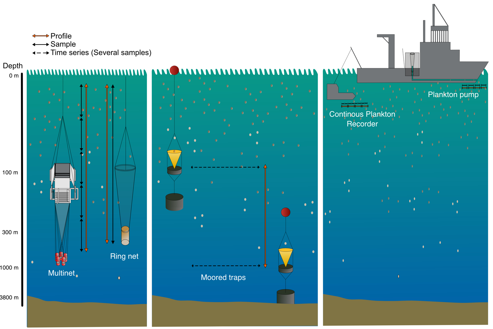

The FORCIS (Foraminifera Response to Climatic Stress) database serves as a repository for datasets documenting the diversity and distribution of living planktonic foraminifera in the global oceans spanning from 1910 to 2018. This comprehensive database encompasses data collected through four sampling methods, including:
- Plankton net
- Continuous Plankton Recorder (CPR)
- Sediment traps
- Pump

Within the FORCIS database, each subsample is linked through unique
identifiers, or primary keys, labeled as site_id,
profile_id, cast_id, sample_id,
and subsample_id. These identifiers establish a
hierarchical framework, facilitating the exploration and analysis of the
data.
Site identifier
Each site is characterized only by its location (longitude and latitude coordinates). Associated information are water depth and ocean basin.
The unique identifier site_id could be either sourced
from the original publication/study (e.g. PECH_B), or generated by the
database managers (e.g. MedSeaCruise_St1).
Profile identifier
For the net data, profiles are distinguished by
their time of collection and location as well. For each profile in this
table, profile_id is attributed based on the profile date
(time of the collection) and coordinates. Overall, profile identifier
have the same coordinates, and different times of sampling were
incremented. In some cases, the coordinates, profile date and site water
depth at the same profile could change slightly due to the multiple
sampling events and ship movements (e.g. when multiple sampling events
were carried out at the same site). For the sediment trap
data, the profile identifier is incremented when the deployment
has changed. The date, depth range of each profile, availability of the
environmental data including ambient seawater chemistry, and profile
season are also included in the table profiles.
Cast identifier
The cast_id provides information regarding the casts,
the sampling device name, depth range of a cast, mesh size, and net
opening of the plankton tow.
Sample identifier
Each sample is characterized by its depth range, volume of water filtered (for net data), coordinates, segment length (for CPR data), date of sampling, and in situ temperature and salinity.
Subsample identifier
One sample could be divided into different subsamples
(subsample_id) based on their
subsample_size_fraction_min,
subsample_size_fraction_max or/and
subsample_living_or_dead. Other information is also
reported such as: subsample_count_type,
subsample_sieved_or_measured,
subsample_storage_type, and
subsample_splitting_type.